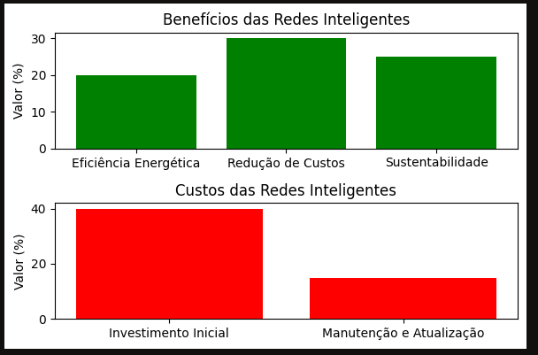

Redes Inteligentes: Potencializando a Energia Verde
Definição de Energia Verde: Fontes limpas e renováveis (solar, eólica, hidrogênio verde).
Problema Atual: A demanda crescente por energia sustentável exige inovação na forma de gerar, distribuir e consumir eletricidade.
Introdução às Redes Inteligentes: Redes inteligentes, ou smart grids, são sistemas que utilizam tecnologia digital para otimizar a distribuição de eletricidade,
melhorando a eficiência e a confiabilidade do fornecimento de energia.
O Funcionamento de uma Rede Inteligente
Elementos de uma Rede Inteligente: Sensores, medidores inteligentes, sistemas de controle em tempo real, e sistemas de comunicação digital.
Como a Rede Inteligente Funciona: A rede coleta dados de consumo, geração e fluxo de energia, gerenciando e distribuindo eletricidade de maneira eficiente e automática.
Benefícios das Redes Inteligentes para a Energia Verde
Integração de Fontes Renováveis: As redes inteligentes estabilizam a intermitência da energia solar e eólica.
Redução de Perdas Energéticas: Monitoramento em tempo real e ajustes automáticos reduzem o desperdício.
Resposta à Demanda: Ajuste automático do consumo para evitar picos e permitir tarifas dinâmicas.
Benefícios Ambientais e Econômicos: Menor uso de reservas poluentes e menor custo de operação.
Aplicações Práticas de Redes Inteligentes
Exemplos Reais:
Estados Unidos e Europa: Uso de redes inteligentes para integrar grandes parques eólicos.
Japão: Gestão eficiente da energia pós-desastre natural.
Cidades Sustentáveis: Como Barcelona e Copenhague utilizam redes inteligentes para alcançar metas de energia verde.
Impacto Prático: Redução de 20-30% nas emissões de CO₂, maior resiliência e redução nos custos de eletricidade.
Os dados são baseados em estudos de caso de um projeto da União Europeia que analisou a eficiência energética em diferentes setores
link do estudo
Desafios e Oportunidades
Principais Desafios:
Alto custo inicial de implementação.
Questões de cibersegurança e proteção de dados.
Necessidade de uma infraestrutura robusta e adaptável.
Oportunidades:
Redução dos custos com avanços tecnológicos.
Expansão global com incentivos governamentais e parcerias público-privadas.
Futuro promissor na integração de novas tecnologias, como inteligência artificial para previsão de consumo e manutenção preditiva.

Conclusão e Visão de Futuro
Impacto nas Metas de Sustentabilidade: Como as redes inteligentes podem contribuir para as metas de neutralidade de carbono.
As redes inteligentes são essenciais para uma transição energética eficiente e sustentável.
Com a digitalização e a inteligência aplicada,
é possível criar um futuro mais verde e inovador.